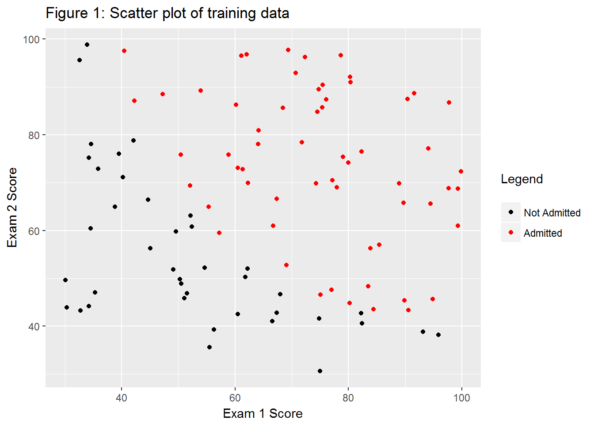
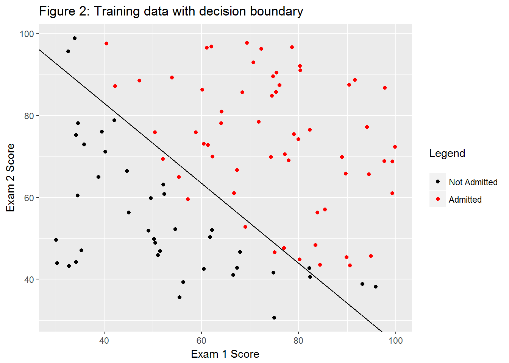
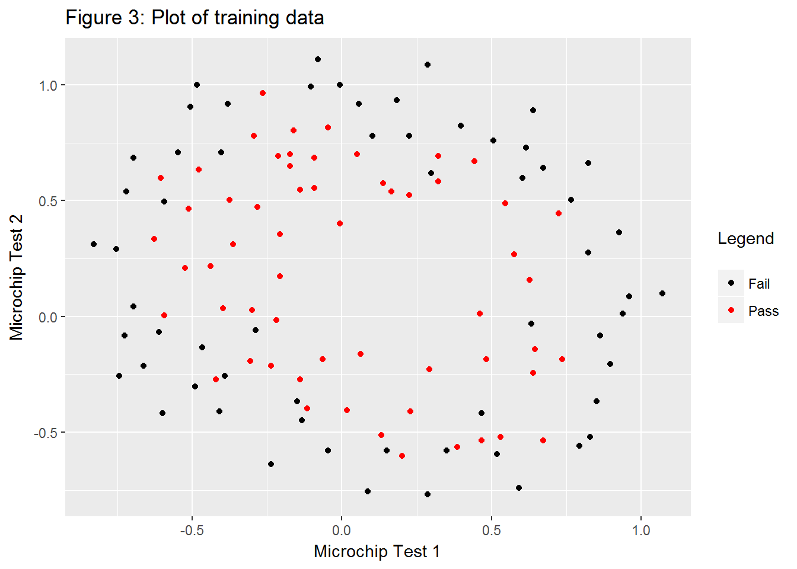

require(ggplot2)
require(knitr)read_chunk("ex2/ex2_chunks.R")Read in data and initialize theta
ex2data1 <- read.table("data/ex2data1.txt", sep = ",")
ex2data1 <- cbind(1, ex2data1)
initial_theta <- rep(0, times = 3)g1 <- ggplot(ex2data1, aes(x = V1, y = V2, color = as.factor(V3))) +
geom_point() +
labs(x = "Exam 1 Score",
y = "Exam 2 Score",
color = "Legend\n") +
scale_color_manual(labels = c("Not Admitted", "Admitted"), values = c(1,2))
g1 + ggtitle("Figure 1: Scatter plot of training data")
sig <- function(x){1 / (1 + exp(-x))}Note that costFunction takes a matrix M with the outcome in the last column, and separates it into Xs and Y. Note that I’ve implemented regularization for the first exercise so the function can be reused for the second part of this exercise.
costFunction <- function(M, theta, lambda = 0){
m <- nrow(M)
X <- M[, 1:(ncol(M) - 1)]
y <- M[, ncol(M)]
J <- - (1 / m) * crossprod(c(y, 1 - y),
c(log(sig(X %*% theta)), log(1 - sig(X%*% theta)))) +
(lambda / (2 * m)) * sum(theta ^ 2)
grad <- (1 / m) * crossprod(X, sig(X %*% theta) - y) +
(lambda / m) * theta
list(J = as.vector(J), grad = as.vector(grad))
}optimI used R’s optim as an alternative to Matlab’s fminunc. costFunction returns both the cost and the gradient.
ex2data1 <- as.matrix(ex2data1)
newTheta <- optim(par = initial_theta,
fn = function(x){costFunction(ex2data1, x)$J},
gr = function(x){costFunction(ex2data1, x)$grad},
method = "BFGS", control = list(maxit = 400))testScores <- c(45, 85)With test scores of 45, 85, we should see an admission probability of 0.776.
h <- function(theta, x){
# matrix multiplication is pairwise multiplication, then summed
sig(sum(theta * x))
}h(newTheta$par, c(1, testScores)) # Include the x0 term## [1] 0.7756949While the in-sample error isn’t reported in the excercise sheet, the above test makes me reasonably sure that this is working correctly. I’ll update this if I hear from anyone who has taken this course for credit.
predLogReg <- function(M, theta){
apply(M[, seq_along(theta)], 1, function(x){h(theta, x)})
}ex2data1Pred <- predLogReg(ex2data1, newTheta$par)
sum(ex2data1[, 4]==round(ex2data1Pred, 0)) / nrow(ex2data1)## [1] 0.89By eyeballing the plot in the exercise sheet, we can see the decision boundary lies about on (50, 75) and (75, 50). By using those points as initial parameters, I find two points on the decision boundary using optim.
findDecisionBoundary <- function(pts = matrix(c(50,75,75,50), 2, 2), theta){
newYs <- apply(pts, 1, function(x){
optim(par = x[2],
fn = function(y){
(h(c(1, x[1], y), theta) - 0.5) ^ 2
# Squared so min wil be at the decision boundary
},
method = "BFGS", control = list(maxit = 400))
})
newYs <- do.call(rbind, newYs)
newYs <- unlist(newYs[1:2])
data.frame(x = pts[, 1], oldY = pts[, 2], newY = newYs)
}decPoints <- findDecisionBoundary(theta = newTheta$par)The prediction should be 0.5 for both points (definitionally), so we can see if we made a mistake
apply(decPoints[, c(1, 3)], 1, function(x){h(c(1, x), newTheta$par)})## [1] 0.5 0.5dec.lm <- lm(x ~ newY, decPoints)
g2 <- g1 +
geom_abline(slope = dec.lm$coefficients[[2]], intercept = dec.lm$coefficients[[1]])
g2 + ggtitle("Figure 2: Training data with decision boundary")
ex2data2 <- read.table("data/ex2data2.txt", sep = ",")
g3 <- ggplot(ex2data2, aes(V1, V2)) +
geom_point(aes(color = as.factor(V3))) +
labs(x = "Microchip Test 1",
y = "Microchip Test 2",
color = "Legend\n") +
scale_color_manual(labels = c("Fail", "Pass"), values = c(1, 2))
g3 + ggtitle("Figure 3: Plot of training data")
y <- ex2data2$V3
x1s <- ex2data2[, 1]
x2s <- ex2data2[, 2]
for(i in 2:6){
x1s <- cbind(x1s, ex2data2[,1] ^ i)
}
x1s <- cbind(1, x1s)
for(i in 2:6){
x2s <- cbind(x2s, ex2data2[,1] ^ i)
}
x2s <- cbind(1, x2s)
allxs <- vector()
for(i in 1:ncol(x2s)){
allxs <- cbind(allxs, x1s[, 1:(8-i)] * x2s[,i])
}
ex2data2.full <- cbind(allxs, y)From the exercise sheet, we should expect an initial cost of about 0.693.
initial_theta <- rep(0, times = 28)
costFunction(ex2data2.full, initial_theta)$J## [1] 0.6931472optimnewTheta2 <- optim(par = initial_theta,
fn = function(x){costFunction(ex2data2.full, x)$J},
gr = function(x){costFunction(ex2data2.full, x)$grad},
method = "BFGS", control = list(maxit = 1000))Unfortunately, there isn’t a numerical check I can do to make sure this is correct.